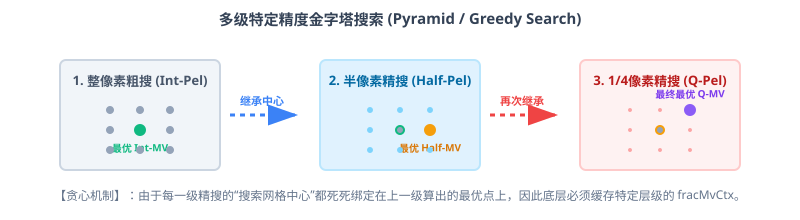
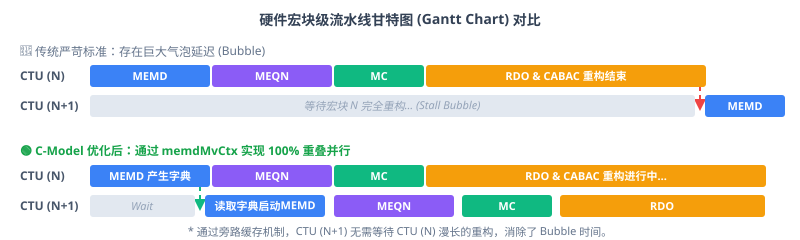
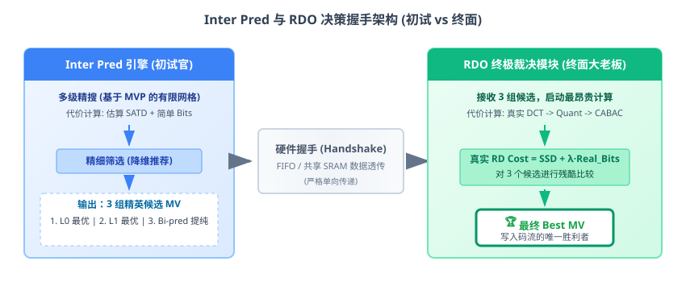
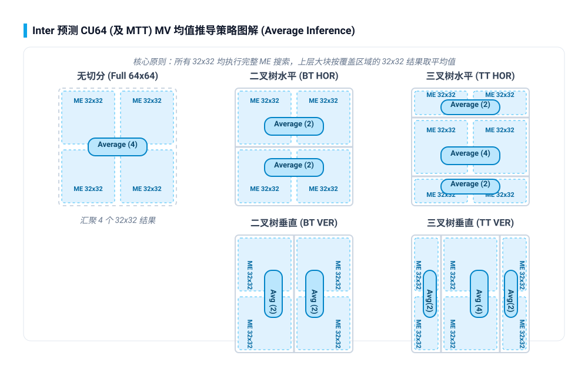

VideoEncoder_Project 帧间预测与架构优化总结
Inter Prediction Architecture & Hardware Bottlenecks
1. 帧间预测高阶架构总览
VideoEncoder_Project 包含对多种标准（HEVC, AV1, H264）的 Inter Prediction（帧间预测）实现。本文档以 HEVC 帧间预测 (hevc/inter_mode.c) 作为基础模型，分析其运动估计（Motion Estimation, ME）与运动补偿（Motion Compensation, MC）的核心架构设计。
2. 运动矢量精度与 AMVR 机制
传统编码器对所有 MV 统一使用 1/4 像素精度。AMVR 允许编码器根据内容自适应地选择 4 种精度级别：4-Pel（整像素×4）、整像素、半像素、1/4 像素。对于运动平缓的区域，使用低精度 MV 可以大幅节省比特开销。
- 精度映射：根据 CU 级别的
imv标志（0~3），从m_amvrPrecision[]表中查出目标精度（1/4、整像素、4-Pel、半像素）。 - 向下对齐：调用
changePrecision(src → dst)将 MV 右移到目标精度，此过程中丢弃低位。 - 向上还原：再调用
changePrecision(dst → src)左移回内部表示精度，完成"Round-trip"对齐。 - 核心效果：经过这组"先降后升"操作，MV 的低位被强制清零，等效于量化到目标精度网格上。
3. 多级搜索范围配置 (Search Ranges)
硬件 ME 模块对 P 帧与 B 帧的搜索范围做了精细划分，采用多级 (Stage) 搜索策略，逐级收敛搜索窗口，在保证编码质量的前提下极致节省搜索带宽。
| Stage | X 范围 (±pixels) | Y 范围 (±pixels) | 降采样 (Shift) | Step (步长) |
|---|---|---|---|---|
| 0 (Coarse) | 128 | 64 | 3 | 8 |
| 1 (Medium) | 128 | 32 (LIMIT) | 2 | 4 |
| 2 (Fine) | 8 | 4 | 1 | 2 |
| 3 (Refine) | 4 (or 2) | 2 (or 1) | 0 | 1 |
| 4 (SubPel) | 1 | 1 | 0 | 1 |
128×64
Step=8"] --> S1["Stage 1
128×32
Step=4"] S1 --> S2["Stage 2
8×4
Step=2"] S2 --> S3["Stage 3
4×2
Step=1"] S3 --> S4["Stage 4
SubPel
1×1"] style S0 fill:#fee2e2,stroke:#ef4444 style S1 fill:#ffedd5,stroke:#f97316 style S2 fill:#fef9c3,stroke:#eab308 style S3 fill:#dcfce7,stroke:#22c55e style S4 fill:#e0f2fe,stroke:#0288d1
SlideEditing_1280x720_30.yuv 有显著影响，平均仅 0.6% BDR-Y 损失），大幅削减片上 SRAM 缓存和带宽。这是一种典型的以边界情况 (Corner Case) BDR 换取硬件极致面积的设计取舍。
4. 空域与时域 MVP 获取机制
4.1 空域 MVP (Spatial MVP)
在 xGetNeighborAvailable 函数中，对当前预测单元 (PU) 的周边块 (A0, A1, B0, B1, B2 等) 进行可用性判定和 MV 提取。
- 位置计算：根据当前 PU 的坐标和尺寸，推导出 A0/A1/B0/B1/B2 五个邻接采样点的绝对坐标 (xN, yN)。
- 同 CU 判断：快速检查 (xN, yN) 是否落在当前 CU 内部。若是同 CU，则直接引用本块数据，避免外部内存访问。
- Z-Scan 可用性：通过
z_scan_availability()判断邻接块是否已编码完毕（编码顺序约束）。 - MTT 兼容修正：当 CU 采用非对称 MTT 划分（如
mttDepth > 0）时，对 B1/A1 进行特殊的 covering_cu 查找。 - Intra 过滤：若邻接块的预测模式为
MODE_INTRA或MODE_IPCM，标记为不可用。 - MV 提取：根据当前搜索阶段（1/4 像素、1/2 像素或最终 MV），从邻接 CU 的对应 MV 上下文中读取运动矢量。
4.2 时域 MVP (Temporal MVP / TMVP)
TMVP 利用参考帧中与当前块同位置 (Colocated) 的已编码块的运动矢量，经过 POC 距离缩放后，作为当前块的 MV 候选。这是跨帧级别的运动预测，能有效捕捉帧间运动的时间连续性。
- 参考帧选择：根据
bColFromL0Flag选择 L0 或 L1 参考帧作为 Colocated 帧。 - CU 定位：在 Colocated 帧中，通过 8×8（VVC）或 16×16（HEVC）粒度的压缩存储表，定位同位 CU 并读取其 MV。
- 距离缩放：计算
iScale = (tb × tx + 32) >> 6，其中 tb 为当前帧与当前参考帧的 POC 差，td 为 Colocated 帧与其参考帧的 POC 差。 - MV 应用：通过
scaleMv(iScale, colMv)对 Colocated MV 进行等比缩放后，加入候选列表。
4.3 RDO 与 ME 中 MVP 机制的硬件架构对比
虽然 RDO (Rate Distortion Optimization) 和 ME (Motion Estimation) 都使用空域和时域 MVP，但它们在硬件架构上的定位和提取机制有着本质的区别。ME 的 MVP 旨在为搜索提供优良的起点以节省带宽，而 RDO 的 MVP (如 Merge List 和 AMVP List) 则直接作为最终编码模式的候选被严格评估。
| 对比维度 | ME (运动估计) 前端 MVP 机制 | RDO (率失真优化) 后端 MVP 机制 |
|---|---|---|
| 核心目标 | 寻找起始搜索中心，降低 MVD 代价，快速收敛搜索 | 严格遵守视频标准构建候选列表，进行精确比特流和失真评估 |
| 硬件流水线位置 | 处于流水线极前端，通常与重构环路解耦 | 处于流水线后端，必须等待真实像素重构和 CABAC 状态更新 |
| 数据源约束 (突破口) | 读取早期流水线产生（尚未完全定型）的 memdMvCtx 或 fracMvCtx 缓存态 MV，彻底打破重构流水线的数据依赖 | 必须使用 100% 标准合规的完全重构 MV，否则解码端会引发宏块崩溃 (Mismatch) |
| 列表构建与修剪 (Pruning) | 粗略且贪心，一旦获取有效预测子即刻启动搜索，无复杂去重逻辑 | 极其严苛，包含繁复的满载修剪 (Pruning)、双向结合及零矢量填充 (Zero Padding) |
🔍 核心印证：解耦机制与“两套账本”策略
为了实现 100% 的并行化延迟掩盖，我们的硬件（及其对应的 C-Model）在底层获取可用邻接块时，彻底抛弃了同步等待，而是巧妙地采用了“两套相互独立、不同步更新的 MV 状态账本”的设计思想：
- 官方账本 (RDO)： 必须等待真实像素经过完整的 DCT、量化、CABAC 这一套漫长的流程后，才能把最终盖棺定论的合规 MV 写入。如果前端去死等官方账本，流水线必然卡死。
- 内部预估账本 (MEMD)： 运动估计前瞻阶段一旦算出一个大概的最优 MV，绝不等待后续重构，立刻将其写进专属的内部缓存账本（即 C-Model 中的
memdMvCtx）。 - 查账与强行透传： 当底层函数发现当前仍处于初期的运动估计阶段时，直接打断标准重构链，强行定位并提取邻居块的
memdMvCtx，完成半成品数据的瞬间透传。
正如你所说，精搜本质就是一个贪心算法 (Greedy Algorithm) 构成的金字塔搜索：
下一个更高精度的 MV，其“搜索网格的中心起点”完全依赖于上一个精度的最优搜索结果。正是因为这种层层递进的强制空间依赖，C-Model 才必须在底层维护 fracMvCtx 缓存。

由于底层的 MEMD 和多级精搜通过上述“两套独立账本”旁路了真实的数据流，宏块 N+1 的前端计算（如获取左侧预测子）完全不需要等待宏块 N 的后端 RDO 收尾工作结束。
在硬件时间轴上，宏块 N+1 的前端计算与宏块 N 的后端 RDO 延展计算实现了完美的零延迟重叠掩盖，彻底消除了流水线 Bubble。

5. ME 精搜与 9 点菱形搜索
在粗搜定位到初始最优 MV 后，精搜阶段采用 3×3 九点全搜索（Half-Pel 和 Quarter-Pel 各一轮），在初始最优点周围的 ±1 范围内遍历所有候选位置，选取 RD Cost 最小者。
代码中
s_acMvRefineH[] 和 s_acMvRefineQ[] 两张搜索偏移表的遍历顺序经过精心重排，严格匹配硬件的行扫描顺序 (左上→右下)。这确保了当两个候选位置的 RD Cost 完全相同时，C-Model 选出的位置与硬件选出的位置完全一致（MEQN_SEARCH_REORDER_05 宏控制）。
6. Inter 模块与 RDO 的核心数据握手 (Handshake Protocol)
为了使得硬件流水线彻底解耦，ME/MC (Inter 预测模块) 跑完整个搜索和插值流程后，会将一组打包好的“核心结果负载”通过 FIFO 或共享 SRAM 传递给后端的 RDO 模块进行最终成本计算和决策。以下是传输链路的关键数据位图：
硬件设计中，数据流是严格的单向传递（ME -> MC -> RDO）。RDO 计算完的比特或者真实的 SAD，绝不允许反向流回 ME 指导下一步动作，否则会形成致命的组合逻辑环路 (Combinational Loop)。
整个 Inter 预测与 RDO 的分工非常明确：
ME 引擎 (前端) 扮演“初试官”，在基于 MVP 的有限网格搜索中，用较粗略的代价 (SATD) 快速筛选出最具潜力的 3 组精英候选。
RDO 模块 (后端) 扮演“终面老板”，它接收这 3 组候选后，启动最昂贵的计算资源 (真正的 DCT/Quant/CABAC)，以真实的码率和失真计算出最精确的 Cost，并敲定最终写入码流的唯一 Best MV。

| 信号类别 (Signal Group) | 位宽估算 (Bit-width) | 物理含义与 RDO 使用场景 (Physical Meaning & RDO Usage) |
|---|---|---|
| 候选运动矢量集合 (Best MV Candidates) |
(16-bit X + 16-bit Y) × 2 (List0 & List1) = 64 bits |
选出机制：由 ME 引擎在 1/4 像素精搜阶段，根据最小的 SATD 代价 (SATD + λ · Approx_MVD_Bits) 从所有搜索点中胜出。
候选数量：在底层的 C-Model 架构中，ME 引擎会强制打包透传 3 组最优候选给后端的 RDO 模块： 1. Top 1 L0 MV (前向最优) 2. Top 1 L1 MV (后向最优) 3. Bi-pred MV Pair (并非简单的 L0+L1 组合，在 C-Model 中由专门的 xPatternRefinementBI() 或 xInterBiCost() 针对双向联合代价面进行了专有精搜提纯)。RDO 使用场景：RDO 会依次让这 3 组 MV 减去后端精准计算的 AMVP Predictor，送入 CABAC 算真实的 MVD Bits，并基于变换量化 (T/Q) 算出真实的 SSD 失真，最终决出胜者。 |
| 参考帧索引 (RefIdx) | 4-bit × 2 = 8 bits | 最优 MV 指向的具体参考帧索引。RDO 计入比特开销，并结合最终模式输出给熵编码模块。 |
| 预测方向 (InterDir) | 2 bits (L0, L1, Bi-pred) | 表示是单向还是双向预测。决定 RDO 在处理比特率评估时的上下文 (Context) 模型选择。 |
| 预测像素块 (Pred Pixels) | 对于 64x64: 4096 bytes (Luma) + 2048 bytes (Chroma) | MC 模块通过 8-Tap 亚像素插值滤波器生成的最终预测块。这是握手中最庞大的数据载荷。RDO 拿到后，会将其与原始像素做差生成残差，然后送入后续的 DCT 变换与量化 (T/Q) 硬件计算真实的失真 (SSD/SSE)。 |
| 前端粗估代价 (ME Cost) | 32 bits | ME 阶段基于 SATD 算出的局部最优代价。虽然 RDO 最终会重新计算精准 Cost，但可以将此值作为提前终止门限 (Early Termination Threshold)。若 ME Cost 已经极大，RDO 可直接跳过对该 PU 的复杂计算以节省功耗。 |
在芯片 RTL 设计中，前三项（MV, RefIdx, InterDir, ME Cost）属于**控制流信息**，总计仅百余 bits，会打包成一个 Header 在一个时钟周期内传递。而庞大的 **Pred Pixels** 属于**数据流信息**，通常通过 AXI / SRAM 突发写入 (Burst Write) 到 RDO 的专有缓存中。
7. 架构边界情况：CU64 模式下 Inter 预测的均值推导 (Averaging) 机制
在咱们的 C-Model 中，考虑到庞大的计算面积开销，底层 Inter 引擎在处理 64x64 超大块时，没有进行真实的 64 级别搜索，而是采用了子块均值融合的降维手段：
🌐 Inter 模式：自下而上的“均值推导”策略
Inter 引擎在架构上保留了 CU64 甚至 MTT（如 BT/TT）的概念，但规避了庞大的整块搜索开销。具体做法是：
- 时序依赖 (Timing Dependency)：必须要等待覆盖该块的所有相关 32x32 子块全部跑完各自的 ME (整数搜) 之后，才能拿到所有的 MV 结果向上汇总求均值，并不存在“只算部分块提前决定”的逻辑。
- CU64x64： 等到底层 4 个 32x32 全部做完，将这 4 个 MV 取平均 (
average of 4 CU32x32 mvs)。 - CU64_BT (如 64x32)： 等覆盖该区域的 2 个 32x32 做完，取这 2 个 MV 的平均。
- CU64_TT 中间块： 等覆盖区域的 4 个 32x32 做完取平均。
如果一个 64x64 不该被划分，那它底下的 32x32 必定有着极其相似的 MV，直接让底层 32x32 分别算完再求平均，是性价比最高且逻辑最严密的降维方案。
